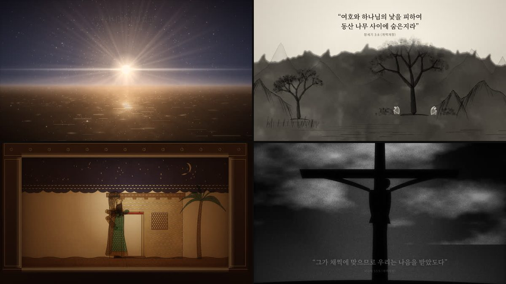
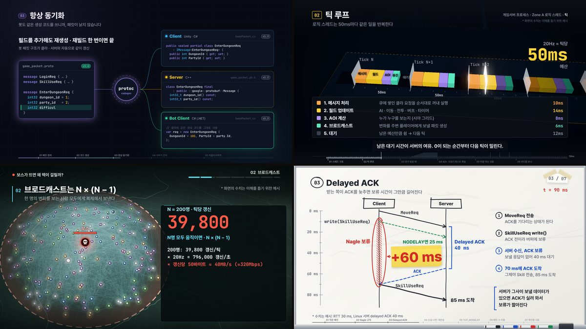
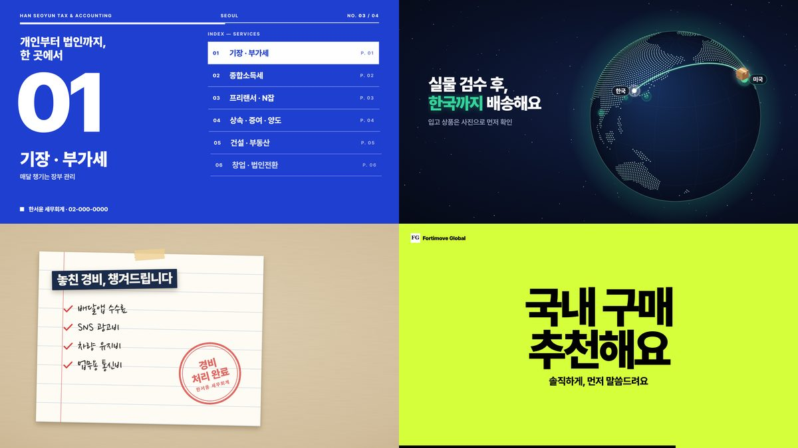
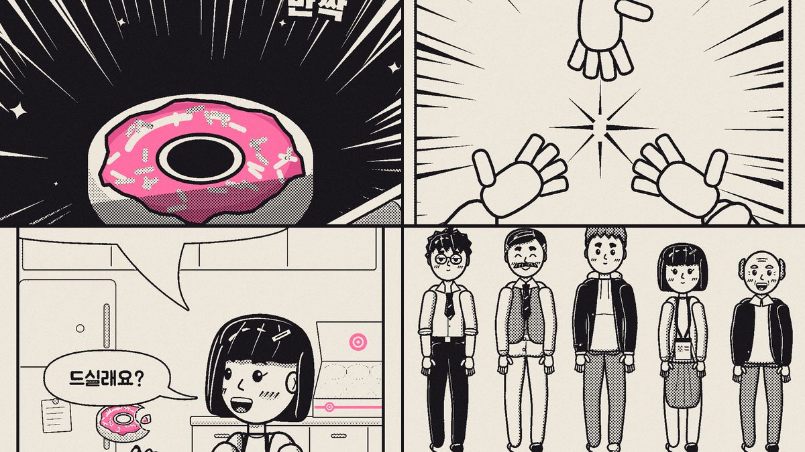

canvas-film
장면마다 화풍이 다른 시네마틱 영상을 HTML Canvas만으로 그립니다. 같은 장면 파일로 가로와 세로 MP4, 다국어 웹 플레이어를 만듭니다.
21 화풍 · 11개 언어
출처: jungrok5/one-scroll-bible의 motion/
Claude Code 에이전트가 따르는 모션그래픽 스킬 모음입니다. 영상은 HTML Canvas 코드로 그리고, 같은 코드로 MP4를 녹화하거나 브라우저에서 재생합니다. 카드의 그림은 각 스킬로 만든 영상의 실제 장면입니다.

장면마다 화풍이 다른 시네마틱 영상을 HTML Canvas만으로 그립니다. 같은 장면 파일로 가로와 세로 MP4, 다국어 웹 플레이어를 만듭니다.
21 화풍 · 11개 언어
출처: jungrok5/one-scroll-bible의 motion/

파이프라인, 프로토콜, 서버 루프 같은 기술 과정을 60–110초 설명 영상으로 그립니다. 주제마다 영상, 설명, 용어집 페이지와 MP4를 만듭니다.
12 주제 · 설명 방식 7가지
출처: jungrok5/mmo-server-explained의 .claude/skills/tech-motion-explainer/

회사 사이트나 블로그를 읽고 15–40초 홍보 영상을 가로와 세로 MP4로 만듭니다. ElevenLabs 내레이션 · 효과음 · 배경음악을 넣고, 영상마다 원샷 프롬프트를 남깁니다.
9 스타일 · 고객 2곳
출처: jungrok5/ysw-tax의 video/ · fortimove/ · audio/

세로로 스크롤되는 무빙툰을 HTML Canvas로 그립니다. 데이터로 정의한 캐릭터, 관절을 검사한 몸, 흑백 망가 인쇄 마감, ElevenLabs 내레이션과 효과음으로 9:16 MP4와 브라우저에서 도는 장면 페이지를 만듭니다.
3장면 · 74초 · 캐릭터 5명
이 레포에서 만듦: motion-webtoon/examples/donut/
스킬 폴더를 프로젝트의 .claude/skills/에 복사하거나 심볼릭 링크로 연결합니다. 아래 명령은 canvas-film을 연결하는 예입니다. 연결한 뒤 만들 영상을 설명하면 에이전트가 맞는 스킬을 골라 씁니다. 에이전트에게 그 폴더의 SKILL.md를 직접 읽게 해도 됩니다.
git clone https://github.com/jungrok5/motion-skills
mkdir -p .claude/skills && ln -s "$PWD/motion-skills/canvas-film" .claude/skills/새 스킬은 대개 다른 프로젝트 레포에서 실제 작품을 만들며 다듬은 뒤 이 레포로 옮겨 옵니다. 폴더 구조, 출처 표기, LESSONS.md, 샘플 페이지를 만드는 순서는 CONTRIBUTING.md에 있습니다. 이 페이지의 카드 목록은 skills.json에서 만듭니다.